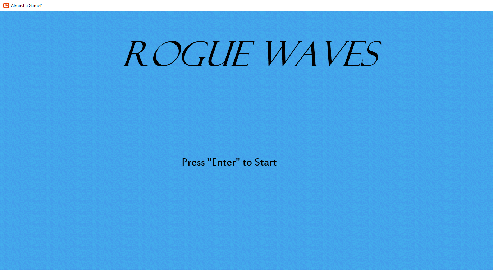
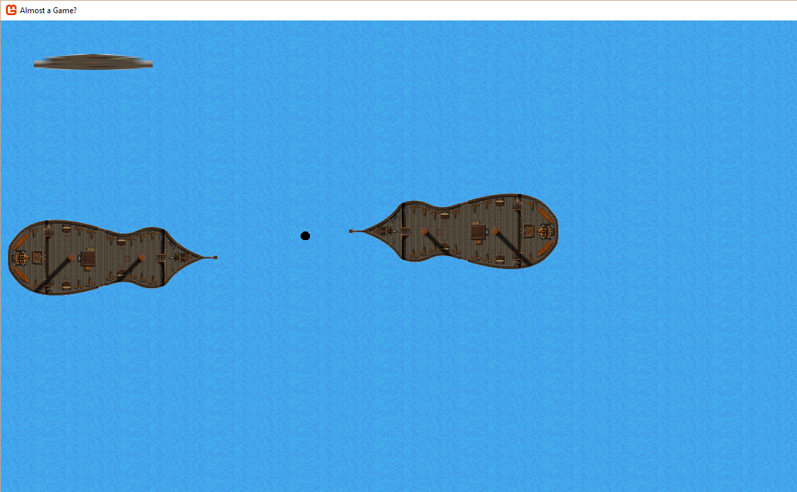
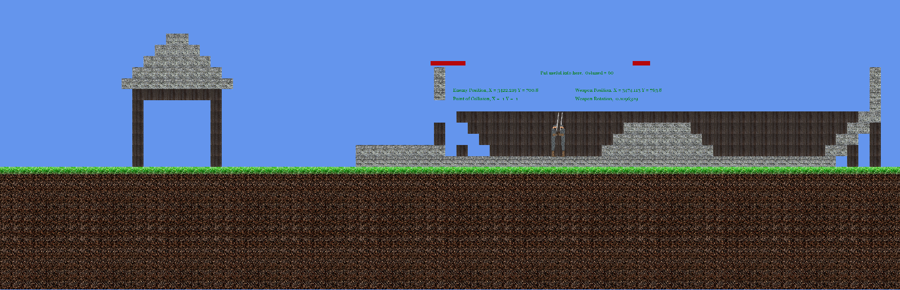
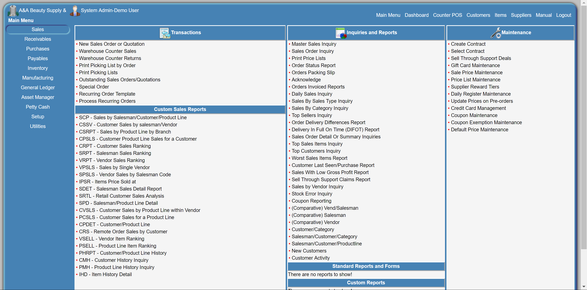
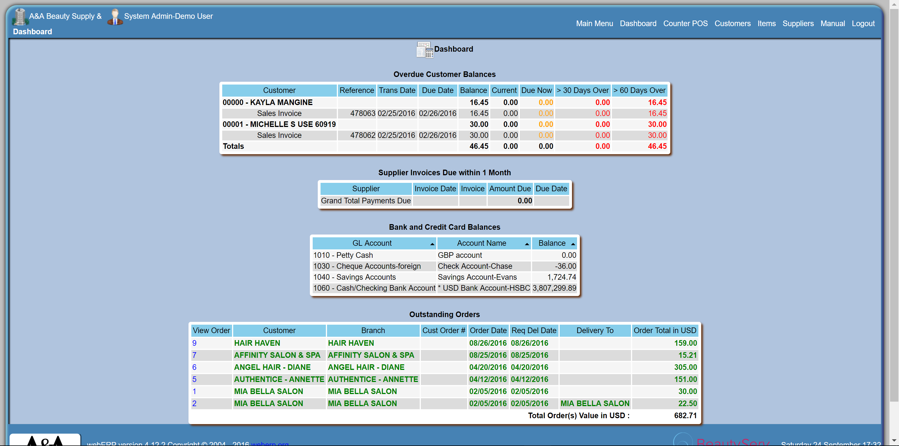
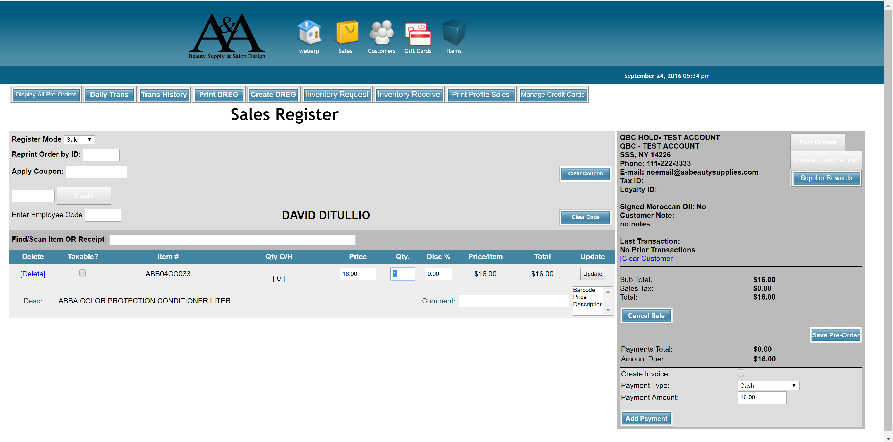
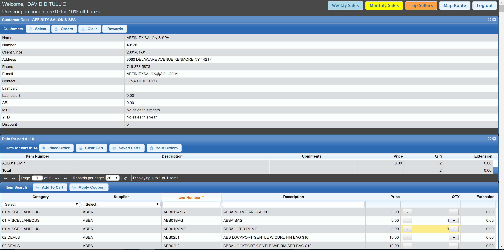

TrytomakeaMapengine (C#, VisualStudio, XNA)
Experiment with game design, takes an image and creates a tilemap. Reads the color of each pixel and maps that to tile information (sprite,collision,visibility)
Later extended to the base of a game with Rudimentary menus, states and inputs
  
Retail and Warehouse Distribution Management System. "BeautyServ"
Demo site
- Components
- webERP - Sysadmin, Full-Stack Developer (LAMP, JavaSCript, CSS), Team Lead
Enterprise Resource Planning software used to manage warehouse order entry, purchase orders, warehouse management (pick lists, invoices, shipments) and payments. - OSPOS - Sysadmin, Full-Stack Developer (MVC, codeignitor, LAMP), Team Lead
Point of Sale system for retail locations that augmented the whole sale distributor using webERP - Custom Mobile Order Entry (PHP, JQuery ,CSS, BootStrap)
Used by traveling salesman to take orders, sometimes with payment, that automatically entered into corporates sytem and printed pick tickets in a warehouse
- webERP - Sysadmin, Full-Stack Developer (LAMP, JavaSCript, CSS), Team Lead
- Accomplishments
- Integrated the two systems database architecture into one and modified the backends to use the single source.
- Integrated Credit Card processing into system. Implemented encrytption and handled user input pipeline to REST API of processing company.
- Designed and Implemented a system for retail stores to continue business after loss of internet. Entailed creating a standalone server to run on local network PC that ran automatic product/customer syncs and that would push local sales to corporate. Modified DB drivers so that when a connection to main server couldn't be made a local one would be used, checking for and resolving sync conflicts. locla system would routinely check for local orders and if any were detected would push to coorporate if a connection could be made.
- Designed and Implemented Gift Card system into all components.
- Designed and Implemented Coupon system into all components.
- Designed and Implemented Warehouse Transfer fast entry system into retail store system. (for transferring goods within company)
- Designed and Implemented Data Analytics and Reporting system into corporate component. (able to get real-time data from all 3 components)
- Created an interactive report customizer for clients to tweak and coerce data analytics
- Various other updates, reworks, and customizations to system components to fit client needs.
- As team lead introduced software for recording, assigning, and tracking tasks. (were originally just using e-mail chains)
   
Food Service Enablers, Inc. - CRM (coldfusion, MS SQLserver, Yahoo YUI)
Product catalog and Sales & Marketing Software that empowers food service teams by automating processes, providing robust reporting, as well as providing the platform for efficiently organizing data.
Personal Contributions
- Automatic image conversion to create thumbnails and low resolution version allowing users to upload only one high resolution Image.
- Text parser to convert html with invalid XML syntax into valid XML syntax
- Text parser to convert custom plain text entry into HTML for auto generating formatted PDFs
- Building queries for reports and reporting interfaces.
- Data management tools, Front to Back.
Fun With SQL
Fun With VBA